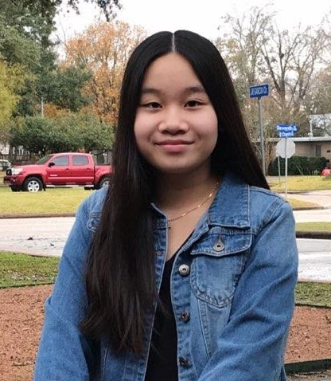
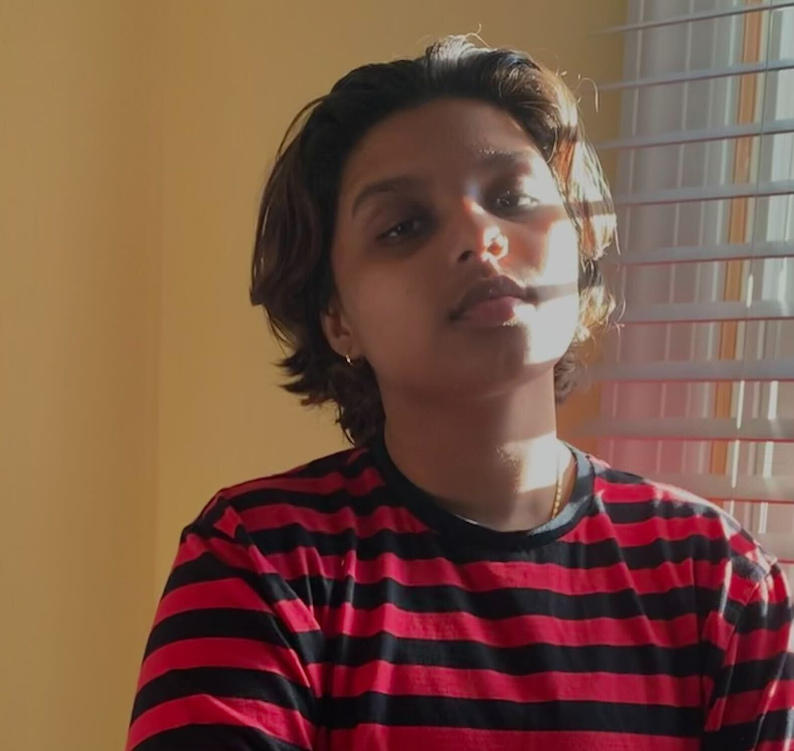
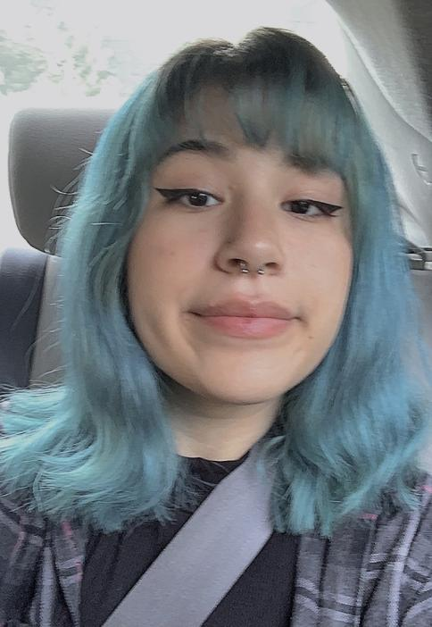

Aequalis, latin for equal and represented by the symbol “=” focuses on the areas of race, gender, and sexual orientation. Aequalis provides help resources and brings light to the issues minority groups face in the current state of the United States government and societal structure, showing the mistreatment of certain people. We acknowledge the growing intersectionality within these groups and ones not mentioned, aequalis is not meant to disregard these experiences, but emphasize the struggle of singular ones.



Hi my name is Anna Nguyen. I am 15 years old, and my pronouns are she/her. I plan to pursue Computer Science in the future. I worked on the People of Color section of the website. Aequalis is important to me because it allowed me to grow more educated about the issues and struggles other people of color face and allowed me to work and research something I'm familiar but passionate about.
Hi my name is Savaas Iqbal. I am 17 years old, and my pronouns are he/him. I want to pursue STEM & Computer Science in college. I primarily worked on the LGBTQ+ section. Aequalis is important to me as a transgender person, to provide resources to my community and others in need. This resource would have been a great help for my journey in learning about myself.
My name is Nohemi Morales. I am 18 years old, and I go by she/her pronouns. I am an upcoming freshman at Virginia Tech with plans to pursue Computer Science. Though my focus in college will be cybesecurity, I have a passion for art and design as well as activism. Aequalis is important to me as a woman in the STEM field because it showcases minority groups through a STEM source.